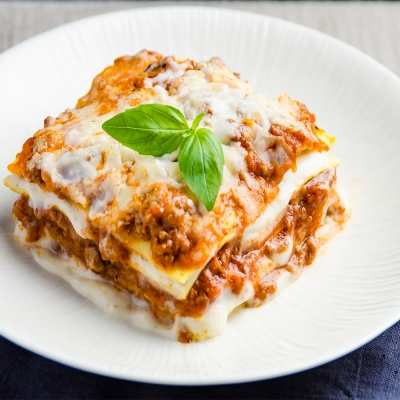

Delicious vegan lasagna

Description
The best lasagna for anyone!! Delicious lasagna that is cheesy and high-protein pasta dinner that's perfect for holidays and weeknights. The taste is just as inviting as any other lasagna you have tried!!.
Key Ingredients
- Noodles
- olive Oil
- Onion
- garlic
- Eggplant
- Seasoning
- Vegan Meat Alternative Crumbles: ex: Beyond Meat Crumbles
- Tomato sauce
- Vegan Ricotta
- Shredded Vegan mozarella
- Basil
Instructions
- Preheat Oven to 350 Degrees F and Cook the Noodles
- Saute the Eggplant:While pasta is boiling (it took 10 minutes for me) heat 2 tablespoons of olive oil in a pan over medium heat. Add the onion and garlic, and sauté for about 5 minutes, until onions are translucent and fragrant. Add the chopped eggplant, salt and pepper, and cook for another 10 minutes until the eggplants is soft enough that the wooden spoon or spatula can slice right through it.
- Cook the Vegan Meat:Add in the vegan beefless crumbles/veggie chunks/crumbled veggie burgers and stir to combine. Cook for about 3 minutes. Depending on yours, you may need to add a bit more salt at this point. Taste and add accordingly. Reduce heat to medium low, add in all the tomato sauces and stir to combine, for about 3 minutes. Taste and add salt accordingly. Remove from heat and set aside.
- Begin Building the Lasagna:In a 13” x 9” pan, add 1/2 cup of “meat” marinara sauce mixture on the bottom and spread with a spatula to create an even bottom layer. Cover the bottom with about 4 lasagna noodles lengthwise, overlapping a bit. This will be your first layer.
- Continue Building:Next, add about some of the “meat” marinara sauce mixture (just ensure you have enough for 4 even layers) and then 1/3 of the vegan ricotta, and about 1/3 of the remaining vegan mozzarella on top of the ricotta. Repeat layers until you’ve reached the top layer. Add the remaining meat sauce on top then sprinkle/spread the previously set aside 1 cup vegan mozzarella over it.
- Bake:Cover the pan with foil and bake in the oven for 30 minutes covered. Then broil for about 3-5 minutes of low broil to brown the cheese on top. Top with basil, and allow to set up on the counter for about 10 minutes before cutting into slices. Cut into 9 or 12 even slices. Serve and enjoy!